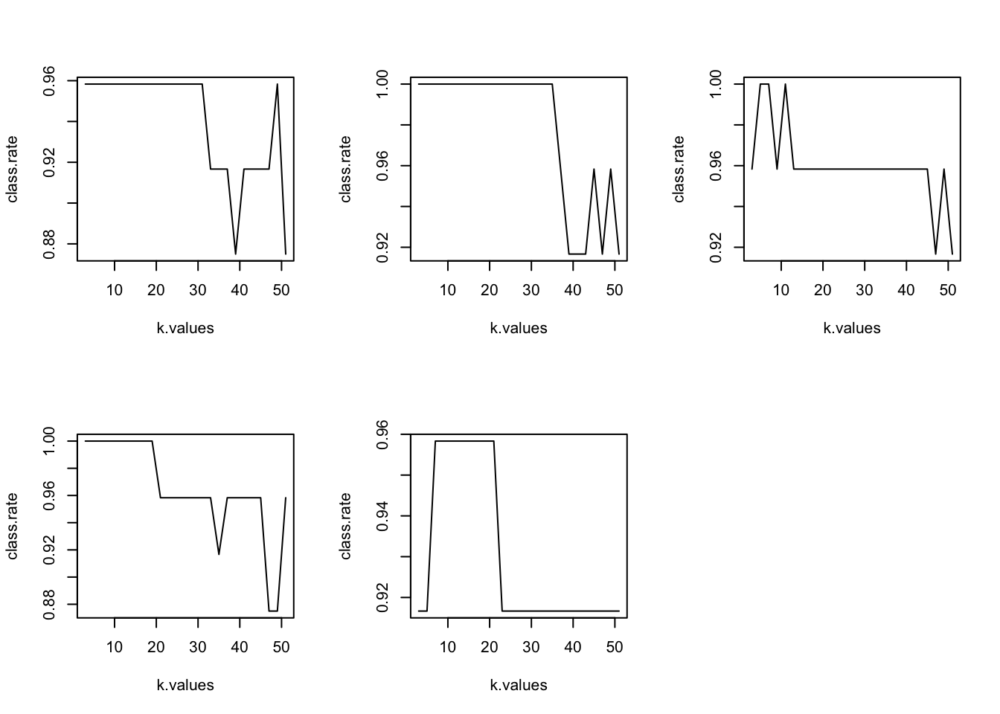

# load libraries and data
library(class)
library(splitTools)
## Warning: package 'splitTools' was built under R version 4.0.5
data(iris)KNN demo with k-fold cross-validation
# make copy of data
data.iris <- iris
# set random seed
randseed <- set.seed(124)
# set aside test data
splits <- partition(data.iris$Species,
p = c(rest = 0.80, train = 0.20))
data.test <- data.iris[splits$train, ]
# define remaining data as data.rest and split these samples into k-folds
data.rest <- data.iris[splits$rest, ]
kfolds.train <- create_folds(data.rest$Species,
k = 5,
seed = randseed)
kfolds.valid <- create_folds(data.rest$Species,
k = 5,
invert = TRUE, # gives back indices of the validation samples
seed = randseed) # OBS! use the same seed as above in kfolds.train()
# uncomment below to check the k-folds splits
# str(kfolds.train)
# str(kfolds.valid)
# verify that the k-folds were done correctly
# (let's just check fold fold1 but should check all the folds in real life)
# check that fold samples are mutually exclusive
# intersect(kfolds.train$Fold1, kfolds.valid$Fold1) # there should be no overlap
# check that all the samples were used (we should get 120 unique samples in our case, sames as in data.rest)
# length(c(kfolds.train$Fold1, kfolds.valid$Fold1))
# dim(data.rest)
# fit the model
k.values <- seq(3, 51, by = 2) # parameter space
k.best.folds <- c() # vector to collect the best value of k across the three folds
par(mfrow=c(2,3))
for (j in 1:5){
# for each fold define train and validation sets
data.train <- data.rest[kfolds.train[[j]], ]
data.valid <- data.rest[kfolds.valid[[j]],]
# repeat fitting KNN as in the previous example
class.rate <- c()
for (i in seq_along(k.values)){
set.seed(randseed)
pred.class <- knn(train = data.train[, -5],
test = data.valid[, -5],
cl = data.train[, 5],
k = k.values[i])
class.rate.truefalse <- pred.class == data.valid[, 5]
class.rate[i] <- sum(class.rate.truefalse)/length(pred.class)
}
plot(k.values, class.rate, type = "l")
k.best.folds[j] <- k.values[which.max(class.rate)]
}
k.best.folds
## [1] 3 3 5 3 7
# now we have five models and we can find corresponding accuracy on the test data for each model
# as well as average of these
final.accuracy <- c()
for (j in 1:5){
data.train <- data.rest[kfolds.train[[j]], ]
class.pred <- knn(train = data.train[, -5],
test = data.test[, -5],
cl = data.train[, 5],
k = k.best.folds[j])
final.accuracy[j] <- sum(class.pred ==
data.test$Species)/length(class.pred)
}
print(mean(final.accuracy))
## [1] 0.9733333